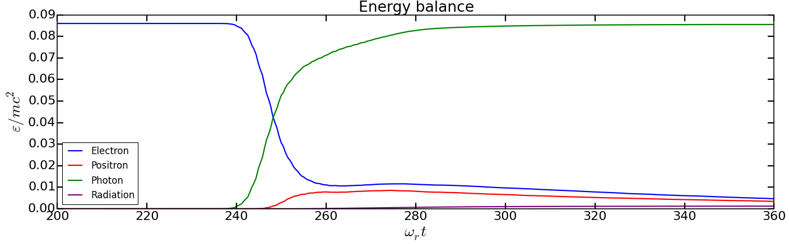

Multiphoton Breit-Wheeler pair creation process¶
The goal of this tutorial is to present how to use the multiphoton Breit-Wheeler pair creation process in Smilei. The following points will be addressed:
How to prepare input files for this physical module
How to setup macro-photon species and the Monte-Carlo emission
How to setup the multiphoton Breit-Wheeler pair creation process
How to use diagnostics
How to read and understand produced outputs
Physical configuration¶
A multi-GeV electron beam is made to collide with a counter-propagating plane wave. This configuration is one of the most efficient to trigger radiative and QED effects. It maximizes the value of the quantum parameter for a given electron energy and a given field strength.
The simulation is 2D Cartesian with a simulation size of \(30 \lambda \times 4 \lambda\) where \(\lambda\) is the laser wavelength. The laser is injected from the left side of the simulation domain while the electron beam is initialized at the extreme right.
In this initial configuration, the laser has a wavelength of \(\lambda = 1\ \mu \mathrm{m}\), an amplitude of \(10^{23}\ \mathrm{W/cm}^2\) (\(a_0 \simeq 270\)) and is linearly polarized in the y direction. The temporal profile is Gaussian (order 4). he full width at half maximum (FWHM) is of 10 laser periods (approximately 33 fs).
The electron beam has an initial energy of 4 GeV and propagates to the left. The beam density is of \(n_b = 10^{-5} n_c\). The electron beam is frozen the time for the laser to be fully injected and so that the collision occurred at the middle of the domain. This enables to have a shorter simulation box and therefore save computational time. The beam is initialized with 32 particles per cell for a total of 3648 macro-particles.
Content of the tutorial¶
Download AdvancedTutorial2.tar.gz and extract it. It contains 2 directories:
AnalysisExecution
The directory Analysis contains Python scripts that will be used to analysis
and visualize the simulation outputs. Each script has been designed to focus on a
specific quantity:
show_energy_balance.py: particle kinetic energy, photon energy and radiated energy (not in the photons) vs. time.show_particle_number.py: number of macro-particles for each species vs. time.show_2d_density.py: maps of the electron, positron and photon density.show_2d_average_energy.py: maps of the electron, positron and photon average energy.show_2d_average_chi.py: maps of the electron, positron and photon quantum parameter.show_2d_fields.py: maps of the electric field \(E_y\) and the magnetic field \(B_z\).show_energy_spectrum.py: electron, positron and photon energy distribution at a given time.
The Execution directory contains the input file:
tst2d_electron_laser_collision.py
Simulation of the multiphoton Breit-Wheeler process¶
We will first learn how to configure the input file for the Monte-Carlo process with macro-photon emission followed by the Multiphoton Breit-Wheeler pair creation process. For this simulation case, we will need to define three species: electrons, positrons and photons. After the configuration, we will then run our simulation test case. Finally, we will see how to read and exploit diagnostic outputs via Python script and the happi post-processing module.
Make a copy of the directory
Executionand name itMultiphoton_Breit_Wheeler. We will perform the simulation in this directory.cp -r Execution Multiphoton_Breit_Wheeler cd Multiphoton_Breit_WheelerOpen the input file
tst2d_electron_laser_collision.py.
Configuration of the radiation reaction block¶
Go to the
RadiationReactionblock.The Monte-Carlo algorithm uses tabulated values. The path can be specified in the block
RadiationReactionvia the parametertable_path(read the documentation if you want to use non-default databases).The parameter
minimum_chi_continuouscorresponds to the minimal value of the quantum parameter at which the radiation reaction process is applied. Below this value, the particle does not undergo radiation reaction. Uncomment the corresponding line. Specifying this parameter is actually not compulsory since it is defined by default at \(10^{-3}\).Uncomment the line with the parameter
minimum_chi_discontinuous. The Monte-Carlo model is built to work with the continuous corrected Landau-Lifshitz approach when the particle quantum parameter is too low. This parameter corresponds to this threshold. Above this value, a particle undergoes radiation reaction via the Monte-Carlo engine. Below the continuous approach is used. This parameter is by default equal to \(10^{-2}\) but it is modified to be \(10^{-3}\) here.The
RadiationReactionshould now look like:RadiationReaction( minimum_chi_continuous = 1e-3 minimum_chi_discontinuous = 1e-3, #table_path = "<path to some Smilei tables>" )
External tables: some models such as the Monte-Carlo radiation model use complex mathematical functions to determine the production rate of photons and energy. These functions are tabulated because it would be too expensive to compute them on the fly for each macro-particles. The Smilei code includes default tables. It is nonetheless possible to use more accurate external tables. This is the purpose of the parameter table_path in the block Radiation. For more information about the tables, see https://smileipic.github.io/Smilei/Use/tables.html.
Configuration of the multiphoton Breit-Wheeler block¶
Go to the
MultiphotonBreitWheelerblock. This block controls the general parameters of the Multiphoton Breit-Wheeler process.The Monte-Carlo algorithm for the Multiphoton Breit-Wheeler process uses tabulated values. The path can be specified in the block
MultiphotonBreitWheelervia the parametertable_path, if you wish to use non-default tables.The
MultiphotonBreitWheelershould now look like:MultiphotonBreitWheeler( #table_path = "<path_to_smilei>/databases/" )
Configuration of the electron species¶
We will first configure the
electronspecies that composes the beam so that it can radiate via the Monte-Carlo model and generate macro-photons Go to theelectronspecies block. you can see that the radiation parameters are commented.The parameter
radiation_modelcorresponds to the type of radiation model to be used. Uncomment the corresponding line. We use here theMonte-Carlo.When
radiation_photon_speciesis present and not set toNone, the possibility to generate macro-photons is activated. This parameter has to be set to the name of thephotonspecies that will receive the created macro-photons. Uncomment the corresponding line. The photon species is calledphoton.The parameter
radiation_photon_samplingenables to control the number of macro-photons generated per emission even. By default, an emission yields a single macro-photons of weight similar to the emitting particle. to increase the emission statistics, you can decide to increase this number so that several macro-photons are generated per even. In this case, the weight is equally divided between macro-photons for quantity conservation. Uncomment the corresponding line.The parameter
radiation_photon_gamma_thresholdenables to control the minimum threshold on the photon energy that allow macro-photon emission. Below the specified value, the radiation reaction is taken into account but no macro-photon is created. Here, since photons of energy below twice the electron rest mass energy have no chance to turn into electron-positron pairs, this threshold is set to 2. This value is actually the default one. Uncomment the corresponding line.The radiation parameters of the
electronspecies block are now:Species( name = "electron", ... radiation_model = "Monte-Carlo", radiation_photon_species = "photon", radiation_photon_sampling = 1, radiation_photon_gamma_threshold = 2, ... )
The electron species is now configured.
Configuration of the photon species¶
We will then configure the
photonspecies that will receive the macro-photons generated by the other species via the Monte-Carlo radiation model. Go to thephotonspecies block. you can see that the Multiphoton Breit-Wheeler parameters are commented. They start bymultiphoton_Breit_Wheeler.The parameter
multiphoton_Breit_Wheeleris a list of two strings. These strings respectively correspond to the species name that will receive the created electron and the created positron. Uncomment the corresponding line. The electron and the positron species respectively correspond toelectronandpositron. When this parameter is commented, the multiphoton Breit-Wheeler is not activated.The parameter
multiphoton_Breit_Wheeler_samplingis the number of macro-electron and macro-positron generated per Monte-Carlo event. This parameter is a list of two integers. By default, an electron and a positron are generated per event. To improve the statistics, these numbers can be increased. The macro-particle weight is then divided in consequence. Uncomment the corresponding line.The multiphoton Breit-Wheeler parameters for the
photonspecies block are now:Species( name = "photon", ... multiphoton_Breit_Wheeler = ["electron","positron"], multiphoton_Breit_Wheeler_sampling = [1,1], ... )
Configuration of the positron species¶
We will then configure the
positronspecies that will receive the macro-positrons generated via the multiphoton Breit-Wheeler. Go to thepositronspecies block.As for the
electronspecies, uncomment the radiation parameters as follow:Species( name = "positron", ... radiation_model = "Monte-Carlo", radiation_photon_species = "photon", radiation_photon_sampling = 1, radiation_photon_gamma_threshold = 2, ... )
The positrons will also radiate with the Monte-Carlo model.
Presentation of the diagnostics¶
Several diagnostics are defined in the input file.
Time-evolution of scalar quantities are configured via the
DiagScalarblock. Here, output of the radiated energy (not including the macro-photons) is requested viaUrad.Ukin_<species>corresponds to the kinetic energy of<species>(total energy for the photons).Ntot_<species>is the number of macro-particles.DiagScalar( every = 10, vars=['Uelm','Ukin','Utot','Uexp','Ubal', 'Urad', 'Ukin_electron', 'Ukin_positron', 'Ukin_photon', 'Ntot_electron', 'Ntot_positron', 'Ntot_photon'] )
The field grids are written out every 500 iterations via the block
DiagFields.The
DiagParticleBinningblocks project the particle quantities on specified multidimensional grids. There are 4 types of diagnostics configured in the input file for each species:the species weight distribution
the kinetic energy times the weight (
weight_ekin)
the quantum parameter time the weight (
weight_chi)
the species energy distribution
The particle binning diagnostics are written every 500 iterations.
Simulation analysis¶
After you have run the simulation, you may start analyzing its results.
Let us first analyze the time-evolution of the number of macro-particles in the simulation. Copy the file
Analysis/show_particle_number.pyin the working directory:cp ../Analysis/show_particle_number.py .
Run the script using iPython:
ipython run show_particle_number.py
You should obtain the following graph:

When the laser starts to interact with the electron beam around \(t = 230 \omega_r^{-1}\), the number of macro-photons rises rapidly due thanks to the Monte-Carlo radiation model. Later, these photons start to decay into electron-positron pairs via the multiphoton Breit-Wheeler. We can observe an increase of the number of macro-electrons and macro-positrons from \(t = 235 \omega_r^{-1}\)
Copy the file
Analysis/show_energy_balance.pyin the working directory and run the script:cp ../Analysis/show_energy_balance.py . ipython run show_energy_balance.py
You should obtain the following graph:
We will now use the particle binning diagnostics. Copy the file
Analysis/show_2d_average_energy.pyin the working directory and run the script:cp ../Analysis/show_2d_average_energy.py . ipython run show_2d_average_energy.py
You should obtain the following graph:
From the top to the bottom, you have respectively the electron, positron normalized kinetic energy and the photon normalized energy.
You can also choose a different timestep using, for instance
run show_2d_average_energy.py 6000We will now do the same thing for the weight (normalized local density). Copy the file
Analysis/show_2d_density.pyin the working directory and run the script:cp ../Analysis/show_2d_density.py . ipython run show_2d_density.py
You should obtain the following figure:
Change the
timestepparameter to see how the beam shape evolves during the simulation and how the positron are created.We can also look at the quantum parameter. Copy the file
Analysis/show_2d_average_chi.pyin the working directory and run the script:cp ../Analysis/show_2d_average_chi.py . ipython run show_2d_average_chi.py
You should obtain the following figure:
The maximal value of the quantum parameter is printed in the terminal. Change the
timestepparameter to see how the electron, positron and photon average quantum parameter evolve during the simulation.To get an idea of where in the laser field the beam is located, you can use the script
Analysis/show_2d_fields.pyCopy and run it:cp ../Analysis/show_2d_fields.py . ipython run show_2d_fields.py
You should obtain the following figure:

Change the
timestepparameter as for the particle binning diagnostics.Finally, we want to analyze the final energy spectra of the species. Copy the script
Analysis/show_energy_spectrum.pyand run it.cp ../Analysis/show_energy_spectrum.py . ipython run show_energy_spectrum
You should obtain the following figure:

To go beyond¶
Optional exercice: Change the laser and electron beam properties to see how it affects the beam energy loss and the production of electron-positron pairs.
Optional exercice: Use the same input file to build a similar case in 3D. You will have to increase the number of nodes. Use a focused laser pulse instead a place wave and see how the pulse waist affect the interaction (final positron energy, beam divergence…).
Optional exercice: Activate the load balancing and change the number of patches to see how it affects the performances.